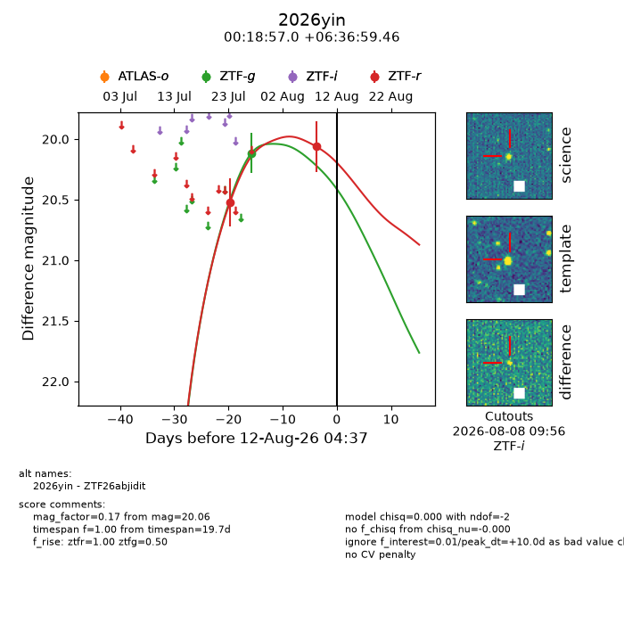
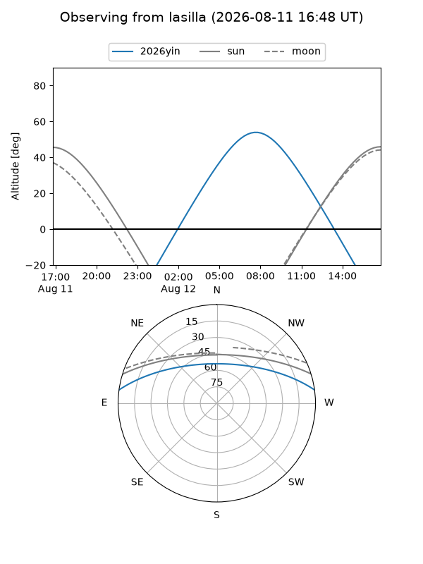
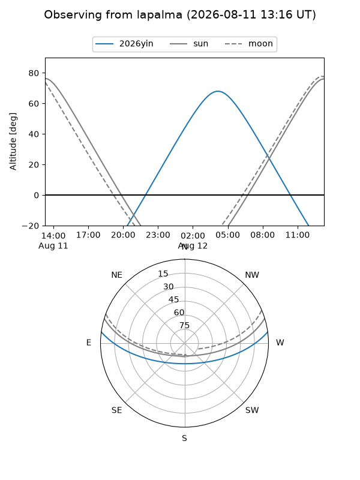
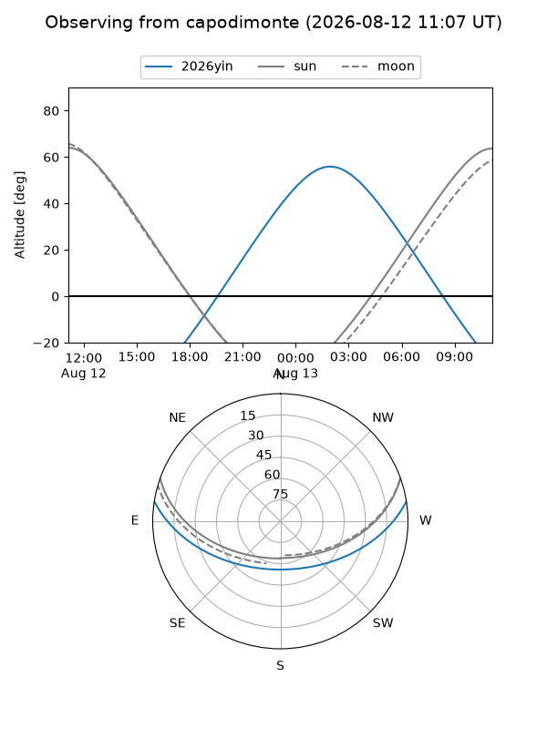
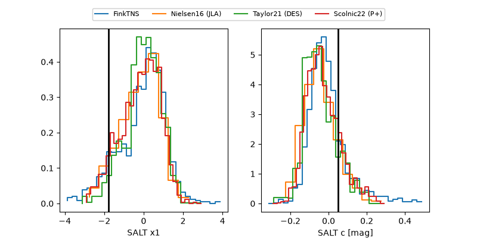

2026yin
Target 2026yin at 2026-08-12 16:18
Aliases and brokers:
FINK-ZTF: ztf.fink-portal.org/ZTF26abjidit
Lasair-ZTF: lasair-ztf.lsst.ac.uk/objects/ZTF26abjidit
ALeRCE-ZTF: alerce.online/object/ZTF26abjidit
YSE-PZ: ziggy.ucolick.org/yse/transient_detail/2026yin
TNS name: wis-tns.org/object/2026yin
Direct TNS query: direct search
alt names
ZTF26abjidit (ztf,fink_ztf)
2026yin (tns,yse)
Coordinates:
equatorial (ra, dec) = 4.7374,+6.61652
equatorial (HMS+DMS) = 00:18:56.97,+06:36:59.46
galactic (l, b) = (108.6410,-55.35121)
Flags:
TNS type: nan
peak dt: +10.5
Photometry:
last ztfg=20.11, ztfr=20.06
1 ztfg, 2 ztfr detections
Lightcurve

Visibility



Additional plots
